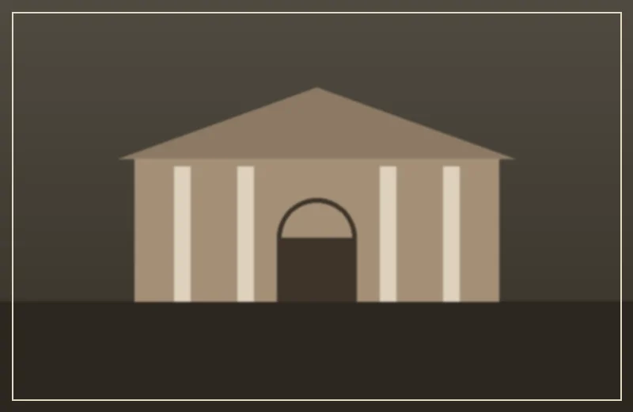
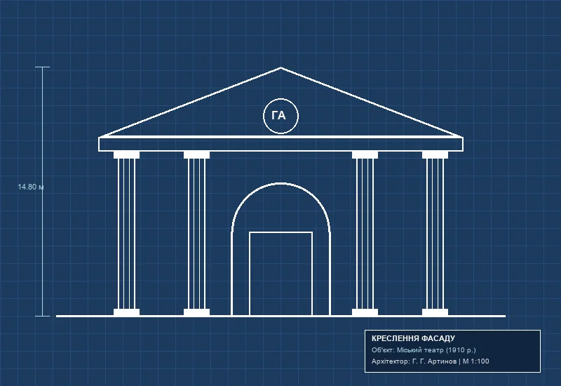

Архітектурні шедеври Вінниці
Монументальний доробок першого міського зодчого (понад 30 реалізованих проєктів)
 1912 рік
1912 рік
Міська водонапірна вежа
Споруджена у сквері на Європейській площі (колишній сквер Козицького) як ключовий вузол першого вінницького водогону. Висота споруди — 28 метрів. Семиповерхова вежа майстерно викладена з високоякісної червоної цегли з білокам'яними поясами. У верхньому ярусі розміщено головний годинник міста із курантами. Сьогодні у приміщенні вежі розташовано Музей воїнів Вінниччини.
 1912–1913 рр.
1912–1913 рр.
Готель «Савой»
Зведений на замовлення вінницького купця Беришлека як найсучасніший готельний комплекс Поділля. Перша будівля Вінниці, обладнана ліфтом, центральним водяним опаленням та електричною мережею. Архітектурне вирішення фасаду поєднує вишукані риси модерну та елементи ампіру: мансардний дах із круглими люкарнами, еркери та витончені балкони.

1910 рікВінницький міський театр
Грандіозна громадська споруда, зведена всього за 11 місяців. Монументальний головний фасад прикрашений класичним шестиколонним портиком коринфського ордера та скульптурним трикутним фронтоном. Глядацька зала була розрахована на 1000 місць і вирізнялася бездоганною акустикою, що дозволило приймати найкращі театральні трупи Європи.

1901–1910 рр.Особняки та громадські споруди
Серед інших видатних робіт Григорія Артинова: жіноча гімназія (1901 р., нині школа №2), особняк капітана Длуголенцького (нині художня школа) із неперевершеними вікнами-хвилями, прибутковий будинок Фіглісі на вулиці Соборній, приміщення міської думи, а також перші залізобетонні мости через річку Південний Буг.